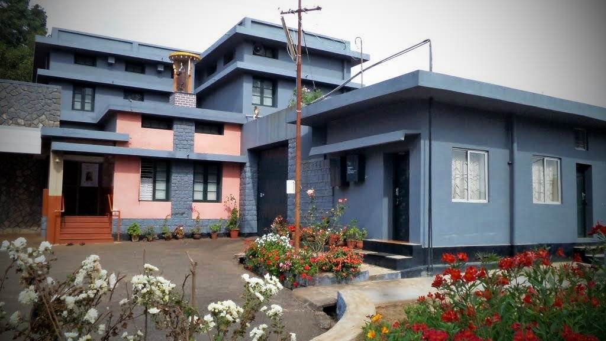

Stating ponit
Adaration Convent, Ooty
Start your journey from the peaceful Adaration Convent, surrounded by the cool mist of Ooty’s hills.
Dhotapetta View Point
A hidden gem offering panoramic views of the Nilgiris and tea gardens—perfect for a scenic photo stop..
Tea Garden & Tea Factory
Walk through lush tea estates and witness the tea-making process, ending with a refreshing cup of Nilgiri tea.
Lunch Stop
Enjoy a traditional South Indian lunch at a local restaurant with views of the hills and valleys.
Wenlock Downs (6th Mile)
A vast green meadow ideal for relaxing walks and famous for its cinematic landscape.
Pykara Lake & Waterfalls (9th Mile)
Take a boat ride on the serene lake and enjoy the beauty of cascading waterfalls nearby.

Needle Rock View Point
Stunning 360° views of valleys and forests—especially beautiful during sunset.

Mudumalai Wildlife Sanctuary
Drive through dense forests and spot wildlife like elephants, deer, and peacocks along the way.

Masinagudi Village
A peaceful retreat nestled at the base of the Nilgiris, surrounded by nature and calm.
Theppakadu Elephant Camp
Meet and observe elephants in their natural habitat and learn about forest conservation.
Vibudhi Malai Murugan Temple
A serene hilltop temple offering spiritual peace and breathtaking views.